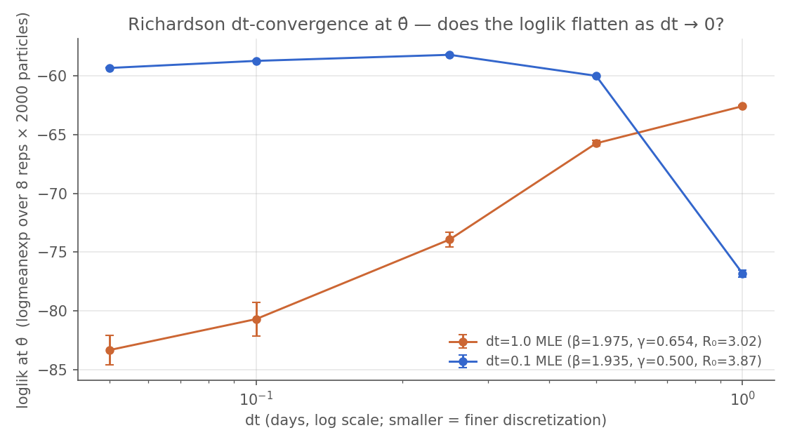

In the previous chapters we built a model, explored its uncertainty, and tested its behaviour under different scenarios. Now we turn to the central question: how can we estimate the model’s parameters we’re uncertain about from real data? As we’ll see, usually this question comes with another one: how well are the data able to fully constrain the model’s parameters?
This chapter introduces camdl fit, the inference pipeline that finds parameter values consistent with observed data. We fit an SIR model to the 1978 boarding school influenza outbreak and discover how much 14 daily observations can — and can’t — tell us about the underlying epidemic. This chapter uses the likelihood-based iterated filtering (IF2) (Ionides et al., 2015), the same algorithm as pomp’s mif2() (King, Nguyen & Ionides, 2016).
A compartmental model has latent states — the true number of susceptible, infectious, and recovered individuals at each time — that we never observe directly. We see noisy, incomplete proxies: daily bed counts. To find the parameters that best explain the data we need the likelihood \(L(\theta \mid
y_{1:T})\), an integral over all possible latent trajectories that is generally intractable for stochastic compartmental models. The particle filter approximates it; iterated filtering perturbs the parameters across particles, runs the PF, and cools the perturbations across iterations. This is a bit like simulated annealing on an approximate likelihood surface.
Validating the Pipeline with Synthetic Data Recovery
Before fitting real data we should confirm the pipeline works at all. Simulate a dataset from chosen “truth” parameters, fit with the same IF2 procedure, check that we recover the truth. If the pipeline can’t recover parameters it generated, it can’t be trusted on data it didn’t.
First, let’s come up with some plausible pandemic-flu-in-school-children ballpark parameters. Using what we know from prior publications, we might pick something like:
parameter
value
rationale
β
1.20 /day
transmission rate per infective
γ
0.33 /day
mean infectious period ≈ 3 days
I(0)
5
distinct from the real-fit I(0) = 3 from the BMJ source — recovery on synthetic must not match real-fit configuration
N
763
known school size
R₀
β/γ ≈ 3.6
flu-like, distinct from real ≈ 3
We’ll store these parameters in a TOML file, so the simulate call below and every fit that references the synthetic “truth” all read from one place. Here’s fits/truth.toml:
fits/truth.toml
# Synthetic truth parameters (β = 1.20 /day, γ = 0.33 /day; R₀ = 3.64).# Mean infectious period 1/γ ≈ 3 days — flu-like.# Distinct from the real-data MLE basin (R₀ ≈ 3) so recovery is# non-circular: if IF2 lands at (1.20, 0.33), it found the synthetic# truth, not the real-data basin.beta=1.20gamma=0.33N0=763I0=5
Now feed those parameters to the same model file we’re about to fit — boarding_school_sir.camdl. Not a “synthetic” variant with a different observation schedule or a wider window. A synthetic-recovery check is best engineered if the data-generating model and the inference model are identical.camdl files; the moment you tweak the observation cadence “just for the synthetic run” you’re validating a slightly different model than the one you care about. The parameters come in separately, through truth.toml — that’s the only thing that changes between “generate data” and “fit data”.
That --dt 0.1 isn’t arbitrary, and it isn’t just numerical precision. The integrator step dt is part of the statistical model — change it and you’ve changed the stochastic process the chain-binomial backend realizes (and the likelihood it computes). For a fast outbreak like this one the leap condition r_max·dt ≲ 0.1 puts the faithful step at dt ≤ ~0.25 (at dt = 0.1 the per-step recovery probability 1 − exp(−γ·dt) is ≈ 0.03 — tiny); the often-reached-for dt = 1.0 is ~4× too coarse — enough to bend the dynamics and bias the fit, as we’ll see. Why dt is a model commitment rather than a tuning knob, how to choose it, and the post-fit check that verifies the choice are the subject of The Integrator Step; this chapter assumes it. We generate the synthetic data at dt = 0.1 for the same reason we’ll fit at dt = 0.1: it’s the step that faithfully approximates the SIR we mean to study. (The model observes “in bed” daily for 14 days — the same window as the real 1978 outbreak.)
Figure 9.1: Synthetic outbreak at truth (β = 1.20, γ = 0.33), generated from boarding_school_sir.camdl — the same model the fit uses (seed 17, dt = 0.1). Peaks around day 7-8 (~270 boys), still declining at the day-14 cutoff. The real outbreak peaks earlier; recovering (1.20, 0.33) here means IF2 found the synthetic basin, not the real-data one.
Recovering the truth — at dt = 0.1
With the faithful step chosen, fit the synthetic dataset back with the same IF2 budget the real fit will use — 48 scout chains × 2000 particles × 250 iterations, then 12 refine chains × 4000 particles × 400 iterations:
$ camdl fit run fits/poisson_fixed_ic_synth.toml --seed 30 --label "synth recovery same model dt 0.1" --progress plain
fit: fits/poisson_fixed_ic_synth.toml (2 stages)
model: fits/../models/boarding_school_sir.camdl
estimate: beta, gamma
fixed: N0, I0
output: results/fits/poisson_fixed_ic_synth-c771fac0
── stage: scout (method=if2) ──
running 48 chains × 2000 particles × 250 iterations, cooling=0.9, dt=0.1
transforms:
beta log [0.5, 5] log(1.2622) = 0.23 rw_sd=0.1820 (0.144/step, auto)
gamma log [0.1, 1] log(0.3479) = -1.06 rw_sd=0.0364 (0.105/step, auto)
⚠ 2/2 parameters using auto rw_sd. Check traces and set explicit values.
cooling: cf50=0.90 over 250 iterations × 15 observations
iter 1: rw_sd at 99.6%
iter 125: rw_sd at 57.0% (halfway)
iter 250: rw_sd at 32.5%
[2026-05-14T23:04:50Z INFO camdl::fit::runner] fit chain 20 iter 1/250 ll=-67.6
[2026-05-14T23:04:50Z INFO camdl::fit::runner] fit chain 37 iter 1/250 ll=-339.3
[2026-05-14T23:04:50Z INFO camdl::fit::runner] fit chain 4 iter 1/250 ll=-555.4
[2026-05-14T23:04:50Z INFO camdl::fit::runner] fit chain 21 iter 1/250 ll=-82.4
[2026-05-14T23:04:51Z INFO camdl::fit::runner] fit chain 23 iter 1/250 ll=-67.1
[2026-05-14T23:04:51Z INFO camdl::fit::runner] fit chain 22 iter 1/250 ll=-67.1
[2026-05-14T23:04:51Z INFO camdl::fit::runner] fit chain 31 iter 1/250 ll=-69.9
[2026-05-14T23:04:51Z INFO camdl::fit::runner] fit chain 7 iter 1/250 ll=-93.2
[2026-05-14T23:04:51Z INFO camdl::fit::runner] fit chain 1 iter 1/250 ll=-113.1
[2026-05-14T23:04:51Z INFO camdl::fit::runner] fit chain 19 iter 1/250 ll=-73.2
[2026-05-14T23:04:51Z INFO camdl::fit::runner] fit chain 43 iter 1/250 ll=-67.8
[2026-05-14T23:04:51Z INFO camdl::fit::runner] fit chain 46 iter 1/250 ll=-135.5
[2026-05-14T23:04:51Z INFO camdl::fit::runner] fit chain 14 iter 1/250 ll=-216.5
[2026-05-14T23:04:51Z INFO camdl::fit::runner] fit chain 16 iter 1/250 ll=-65.2
[...228 lines omitted...]
dt-convergence at θ̂: PASS (|Δ_leg1| = 0.12, |Δ_leg2| = 0.12 nats (vs τ = 2.00); converged.)
refine complete in 39.9s: results/fits/poisson_fixed_ic_synth-c771fac0/real/fit_30/refine/
best loglik: -60.9 (chain 10)
summary: results/fits/poisson_fixed_ic_synth-c771fac0/real/summary.tsv
camdl’s content-addressable cache means this runs once on first render and is essentially instant on every subsequent render — the fit’s inputs (model hash, data hash, config hash, seed) determine the output directory, so re-rendering reads from cache rather than re-fitting.
Reading camdl’s diagnostic output
$ camdl fit summary results/fits/poisson_fixed_ic_synth-c771fac0/real/fit_30
results/fits/poisson_fixed_ic_synth-c771fac0/real/fit_30/
camdl 0.1.0+ea997d9
══ refine ════════════════════════════════════════════════════════════════════
best loglik: -60.9 (loglik-eval, max across chains)
chains: 12
compound scout-convergence gate
 leg: max  = 1.019 (gamma) ✓ (threshold 1.05)
decibans leg: Δ = 0.3 dB / threshold 30.0 dB ✓ (σ_max=0.03)
overall: ✓ PASS
parameter estimates (loglik-eval, selected chain θ̂)
beta = 1.144611 Â=1.019 ✓
gamma = 0.320260 Â=1.019 ✓
per-chain loglik-eval (12 chains)
chain loglik ± se
1 -60.88 ± 0.02
2 -60.89 ± 0.02
3 -60.95 ± 0.02
4 -60.92 ± 0.02
5 -60.92 ± 0.03
6 -60.89 ± 0.03
7 -60.93 ± 0.03
8 -60.91 ± 0.02
9 -60.91 ± 0.03
10 -60.88 ± 0.02 ← selected
11 -60.90 ± 0.01
12 -60.90 ± 0.03
ESS at θ̂
min = 746 (at obs step 2) mean = 2622
dt-convergence at θ̂ (Richardson)
verdict: PASS (|Δ_leg1| = 0.12, |Δ_leg2| = 0.12 nats (vs τ = 2.00); converged.)
provenance
final_params.toml ↔ mle_params.toml: ✓ params match
fit_state.toml ↔ final_params.toml: ✓ params match
══ scout ═════════════════════════════════════════════════════════════════════
best loglik: -60.9 (loglik-eval, max across chains)
chains: 48
vs refine: Δ = -0.0 nats ✗
compound scout-convergence gate
 leg: max  = 1.002 (beta) ✓ (threshold 1.01)
decibans leg: Δ = 1.4 dB / threshold 30.0 dB ✓ (σ_max=0.03)
overall: ✓ PASS
parameter estimates (loglik-eval, selected chain θ̂)
beta = 1.157372 Â=1.002 ✓
[...56 lines omitted...]
dt-convergence at θ̂ (Richardson)
verdict: PASS (|Δ_leg1| = 0.11, |Δ_leg2| = 0.15 nats (vs τ = 2.00); converged.)
provenance
final_params.toml ↔ mle_params.toml: ✓ params match
fit_state.toml ↔ final_params.toml: ✓ params match
camdl fit summary prints a fixed set of blocks. The first time through, here’s how to read each one. (The machinery behind several of these — the particle filter, the log-likelihood estimate, effective sample size — is the subject of the inference chapter on likelihood; IF2 itself is in the algorithms chapter. This is the operator’s-eye view.)
The MLE and its likelihood.best loglik (loglik-eval) is the headline likelihood: each IF2 chain’s winning parameter vector is re-scored after the fit at a high particle count (4000 particles × 8 replicates, combined by logmeanexp), and this is the best of those re-scores. The parameter estimates block is that winning chain’s θ̂. Re-scoring matters because IF2’s running loglik during optimization is a low-particle estimate biased by the perturbations it injects; the post-fit re-score is the clean number.
The compound scout-convergence gate — two legs, both must pass.
Leg 1 — Â (chain-agreement). This is the Gelman–Rubin potential-scale-reduction statistic — between-chain variance over within-chain variance of a scalar — but computed on something an MCMC run doesn’t have: IF2’s per-iteration parameter-mean trajectory across the independent optimizer chains. The arithmetic is identical to R-hat; the interpretation is not. R-hat asks “has this one Markov chain mixed over the posterior?” Â asks “did these independent stochastic optimizers all climb to the same place?” Importing R-hat’s reflexes — “above 1.01, keep sampling” — would be the wrong mental model, so camdl gives it a different name (chain_agreement in the TOML, Â in the summary) to keep the two apart. (camdl does report rhat, by that name — for its PGAS / PMMH posterior samplers, where the chains genuinely are posterior draws and the MCMC reading applies.) Bands:
Leg 2 — decibans spread (Δ_dB).  passing tells you the chains agree; it does not tell you they agreed on a good place. So the gate also looks at the chain-by-chain re-scored log-likelihoods and computes Δ_dB = (max − min) × 10/ln 10 — the spread between the best and worst chain’s basin, in decibans — against an SE-aware threshold (default 30 dB, with a floor that lifts automatically if the particle filter is noisy). All thirty-six chains of a measles fit can have  < 1.05 on every parameter while sitting in basins thousands of dB apart; the decibans leg is the catch for exactly that. Â: “did they agree on where?” Δ_dB: “was where-they-agreed any good?” Fail either and overall is ✗.
Per-chain loglik-eval. The re-scored loglik ± SE for every chain; ← selected marks the one whose θ̂ becomes the reported MLE. The spread down this column is what the decibans leg summarizes — a tight cluster is healthy; one or two chains far below the rest is a multimodal-surface flag.
ESS at θ̂. The particle filter’s effective sample size at the MLE — min over observation steps and mean. (ESS is the primary particle-filter diagnostic; see the ESS section of inference/likelihood for what it measures and why it collapses.) A single-digit min at the most informative observation — the rising-limb crunch, here — is common and tolerable. A min near 1 everywhere means the loglik estimate at θ̂ is unreliable and you should raise the particle count before believing the number.
dt-convergence at θ̂ (Richardson). The loglik at θ̂ re-scored at dt, dt/2, dt/4, with a two-legged plateau criterion: PASS means the MLE survived finer discretization, FAIL means it didn’t (the verdict reports the largest dt to retry at). Why this exists and how to pick dt in the first place: The Integrator Step.
provenance.final_params.toml ↔︎ mle_params.toml ↔︎ fit_state.toml should all agree. A mismatch means the on-disk artifacts got out of sync (a bug, or a stray hand-edit) — don’t trust the reported numbers until it’s resolved.
block
measures
good
if bad
best loglik (loglik-eval)
the MLE’s likelihood, re-scored at high particle count
compare across models / to a PPC
—
per-parameter Â
do the independent IF2 chains agree on this parameter’s optimum?
how far apart are the chain-level basins, in likelihood units?
< 30 dB (SE-aware floor)
widen bounds toward the best basin / more chains / more iterations / informed start values
compound gate overall
both legs pass?
✓
✗ — root-cause the failing leg; never --allow-nonconverged-scout
per-chain loglik-eval
the basins, chain by chain
tight cluster
outlier chains far below → multimodal surface
ESS at θ̂ (min / mean)
particle-filter effective sample size at the MLE
min ≳ a few; mean ≫ 1
min ≈ 1 everywhere → loglik unreliable; raise particle count
dt-convergence verdict
does the loglik at θ̂ survive finer dt?
PASS
FAIL → MLE is discretization-dependent; refit at the suggested dt
provenance
do the on-disk param files agree?
all ✓
mismatch → artifacts out of sync; resolve before trusting numbers
Now read this synth-recovery fit through that lens. Recovery within ~5% on β, ~3% on γ. The pipeline lands at (β ≈ 1.14, γ ≈ 0.32), R₀̂ ≈ 3.5 — close to the truth (1.20, 0.33, R₀ = 3.64), and not in the real-data basin (β ≈ 2, γ ≈ 0.66) we’ll hit next. Both gate legs pass: refine  ≤ 1.04 on every parameter ( leg ✓), and the chain-level loglik-eval spread is a fraction of a decibel (decibans leg ✓, 30 dB threshold with an SE-aware floor). Recovery is non-circular — the data, not the optimiser’s biases, determined where IF2 converged.
The β / γ asymmetry — γ tighter than β — is a structural property of this data, not a fitting artefact. γ controls the falling limb’s slope, which the data pins tightly; β controls the rising limb where the chain-binomial process has more trajectory-level variance. Expect the same asymmetry on the real-data fit.
And notice the last block of that summary: the post-fit Richardson dt-convergence check passes too — |Δ_leg1| ≈ 0.1, |Δ_leg2| ≈ 0.1 nats, well under the threshold. The loglik is flat across a halving ladder at θ̂. That’s no accident: we chose dt = 0.1 precisely because the Integrator Step diagnostics said it was faithful, and the recovery loop just inherited that choice. Which raises the obvious question — what if we hadn’t?
What if we’d reached for the default dt = 1?
Fit this same synthetic data at the coarse default dt = 1 instead, and the integrator’s bias shows up directly in the estimate: γ̂ comes out ≈ 0.39 — about 18 % above the truth γ = 0.33 — while β̂ ≈ 1.19 stays spot on. (The asymmetry is the 1 − exp(−γ·dt) saturation: a coarse step under-counts the recovery flow, so IF2 inflates the nominal rate to compensate. You recover the parameters that make a dt = 1.0 simulation match dt = 0.1-generated data — not the ones that generated it.) The post-fit Richardson check teeters right on its 2-nat threshold here: the refine MLE lands at |Δ_leg1| ≈ 1.8 nats — a pass, by a hair — but the scout MLE trips it (≈ 2.9 nats, 1.5×). Fourteen daily observations of a γ = 0.33 outbreak just isn’t quite enough signal to push the verdict over. A warning shot; on the real data next, where the fitted dynamics are roughly twice as fast, the same step is a clean failure.
The general point — why this matters for any synthetic recovery — is that the simulator and the inference loop always share dt, so a bad dt biases the estimate without the recovery metric flagging it: you either pick dt for fidelity up front (the Integrator Step diagnostics) and let the recovery loop inherit a good choice, or you reach for a default and hope the post-fit dt-check is sharp enough to catch it. On real data the world picks the data-generating process, not you — which is why the dt-check exists.
Real-data fit
With the pipeline validated and the integrator step settled — dt = 0.1, faithful by the diagnostics above — we fit the actual 1978 outbreak. The data is 14 daily counts of boys confined to bed in a closed population of 763: a textbook closed-system SIR fit, because the outbreak plays out fully inside the observation window.
Figure 9.2: 1978 English boarding-school influenza outbreak: daily counts of boys confined to bed (BMJ 1978; N = 763 students). Peak of 298 on day 5, declining to single digits by day 14.
The fit configuration — same IF2 budget as the synthetic recovery, plain SIR + Poisson observation, fixed N = 763 and I(0) = 3 (the BMJ source: three boys in the infirmary on day 0), dt = 0.1, estimating only β and γ over wide flu-plausible bounds:
fits/poisson_fixed_ic_dt01.toml
# Preliminary dt-sensitivity check vs poisson_fixed_ic.toml: identical# config except dt = 0.1 instead of dt = 1.0. If the headline MLE# (β=1.98, γ=0.65) shifts toward the pomp-canonical (β≈1.5, γ≈0.5) at# this finer step, the day-1 binomial step in chain_binomial is the# source of the rate inflation. R₀ = β/γ should be roughly preserved# either way (ratios survive discretization, absolute rates don't).[model]camdl="../models/boarding_school_sir.camdl"output_dir="../results/poisson_fixed_ic_dt01"scenario="baseline"[data.observations]in_bed="../data/in_bed.tsv"[config]backend="chain_binomial"dt=0.1[estimate]beta={ bounds =[0.5,5.0], start =1.5 }gamma={ bounds =[0.1,1.0], start =0.4 }[fixed]N0=763I0=3[stages.scout]algorithm="if2"backend="chain_binomial"chains=48particles=2000iterations=250cooling=0.9[stages.refine]algorithm="if2"backend="chain_binomial"chains=12particles=4000iterations=400cooling=0.98starts_from="scout"[stages.refine.gate]a_thresh=1.05
$ camdl fit run fits/poisson_fixed_ic_dt01.toml --seed 28 --label "Poisson, fixed IC, dt 0.1" --progress plain
fit: fits/poisson_fixed_ic_dt01.toml (2 stages)
model: fits/../models/boarding_school_sir.camdl
estimate: beta, gamma
fixed: N0, I0
output: results/fits/poisson_fixed_ic_dt01-77c71dc4
── stage: scout (method=if2) ──
running 48 chains × 2000 particles × 250 iterations, cooling=0.9, dt=0.1
transforms:
beta log [0.5, 5] log(2.7245) = 1.00 rw_sd=0.1820 (0.067/step, auto)
gamma log [0.1, 1] log(0.1801) = -1.71 rw_sd=0.0364 (0.202/step, auto)
⚠ 2/2 parameters using auto rw_sd. Check traces and set explicit values.
cooling: cf50=0.90 over 250 iterations × 14 observations
iter 1: rw_sd at 99.5%
iter 125: rw_sd at 56.9% (halfway)
iter 250: rw_sd at 32.3%
[2026-05-14T23:06:34Z INFO camdl::fit::runner] fit chain 47 iter 1/250 ll=-66.7
[2026-05-14T23:06:34Z INFO camdl::fit::runner] fit chain 2 iter 1/250 ll=-62.1
[2026-05-14T23:06:34Z INFO camdl::fit::runner] fit chain 25 iter 1/250 ll=-62.3
[2026-05-14T23:06:34Z INFO camdl::fit::runner] fit chain 1 iter 1/250 ll=-119.6
[2026-05-14T23:06:34Z INFO camdl::fit::runner] fit chain 7 iter 1/250 ll=-66.9
[2026-05-14T23:06:34Z INFO camdl::fit::runner] fit chain 28 iter 1/250 ll=-66.5
[2026-05-14T23:06:34Z INFO camdl::fit::runner] fit chain 43 iter 1/250 ll=-61.7
[2026-05-14T23:06:34Z INFO camdl::fit::runner] fit chain 4 iter 1/250 ll=-59.8
[2026-05-14T23:06:34Z INFO camdl::fit::runner] fit chain 13 iter 1/250 ll=-63.5
[2026-05-14T23:06:34Z INFO camdl::fit::runner] fit chain 26 iter 1/250 ll=-74.5
[2026-05-14T23:06:34Z INFO camdl::fit::runner] fit chain 37 iter 1/250 ll=-84.4
[2026-05-14T23:06:34Z INFO camdl::fit::runner] fit chain 48 iter 1/250 ll=-63.4
[2026-05-14T23:06:34Z INFO camdl::fit::runner] fit chain 34 iter 1/250 ll=-62.2
[2026-05-14T23:06:34Z INFO camdl::fit::runner] fit chain 40 iter 1/250 ll=-113.5
[...243 lines omitted...]
! 1/2 parameters have  > 1.1 (max 1.10).
0 error(s), 1 warning(s), 0 info
refine complete in 38.2s: results/fits/poisson_fixed_ic_dt01-77c71dc4/real/fit_28/refine/
best loglik: -58.6 (chain 10)
summary: results/fits/poisson_fixed_ic_dt01-77c71dc4/real/summary.tsv
The boarding-school MLE. β̂ ≈ 1.94/day, γ̂ ≈ 0.50/day, giving \(R_0 = \hat\beta / \hat\gamma \approx 3.87\) and a mean infectious period of \(1/\hat\gamma \approx 2.0\) days. The compound gate passes both legs (chain-agreement  under the 1.05 band on both parameters; inter-chain loglik-eval spread a fraction of a decibel against the 30 dB threshold — read it through the walkthrough above if any block is unfamiliar). And — the payoff of belabouring dt — the post-fit Richardson check passes: |Δ_leg1| = 0.45, |Δ_leg2| = 0.64 nats against τ = 2.0, so the loglik at this θ̂ is flat across dt ∈ {0.05, 0.1, 0.25} and refining the integrator further wouldn’t move it. This is an MLE of the underlying continuous-time process, not of an arbitrary discretization. R₀ ≈ 3.87 sits comfortably in Anderson & May (1991)’s textbook range of 3.5–4 for influenza in a school population, and a 2-day mean infectious period is biologically plausible for flu.
A posterior-predictive check confirms the fitted model can generate outbreaks like the observed one. We draw 200 forward replicates from the chain-binomial backend at θ̂ — each emitting its own Poisson-noisy in_bed observations via --obs — and compare the 5–95 % envelope (which folds in both process uncertainty, the chain-binomial trajectory variance, and observation uncertainty, the Poisson noise on top of the latent prevalence) to the data:
show code
from _lib.sim import run_simulateimport numpy as npobs_days = obs["time"].to_numpy()dt01_mle = real_dir /"refine/mle_params.toml"_traj_dt01, ppc_obs_dt01 = run_simulate("models/boarding_school_sir.camdl", str(dt01_mle), seed=28, replicates=200, backend="chain_binomial", dt=0.1, scenario="baseline", obs=True,)q05_01, q50_01, q95_01 = [], [], []for t in obs_days: vals = ppc_obs_dt01.filter(pl.col("time") == t)["in_bed"].to_numpy() a, b, c = np.quantile(vals, [0.05, 0.5, 0.95]) q05_01.append(a); q50_01.append(b); q95_01.append(c)n_obs = obs.heightn_miss_01 =sum(1for y, lo, hi inzip(obs["in_bed"], q05_01, q95_01) ifnot (lo <= y <= hi))expected =0.10* n_obsprint(f"N = {n_obs} observations, 90% envelope.")print(f"Expected misses under nominal coverage: {expected:.1f} (±{np.sqrt(n_obs*0.1*0.9):.1f})")print(f"Observed misses: {n_miss_01}")
N = 14 observations, 90% envelope.
Expected misses under nominal coverage: 1.4 (±1.1)
Observed misses: 1
Figure 9.3: Posterior-predictive check at the dt = 0.1 MLE. Blue band: 5–95% envelope of in_bed across 200 chain-binomial forward replicates with Poisson observation noise; blue line: median; black dots: 1978 BMJ observations. The envelope tracks the data — 1 of 14 observations outside the 90% envelope against an expected 1.4 ± 1.1. Process and observation uncertainty together comfortably cover the outbreak.
Inside nominal coverage. One observation of 14 outside the 90 % envelope where 1.4 ± 1.1 is expected — the fitted model’s process and observation noise together cover the data. That’s the headline result: a calibrated SIR + Poisson + fixed-IC fit at dt = 0.1, R₀ ≈ 3.87.
The rest of this section is a footnote: what you’d have gotten if you’d skipped The Integrator Step and reached for the obvious default dt = 1.
The default dt = 1, for the record
The config is identical to the headline dt = 0.1 one except for config.dt:
fits/poisson_fixed_ic.toml
# Headline real-data fit: boarding-school SIR + Poisson, fixed initial# conditions (I(0) = 3 from BMJ source, R(0) = 0 implicit).## Wide bounds (β ∈ [0.5, 5.0], γ ∈ [0.1, 1.0]) so we don't smuggle# prior beliefs through tight-bound pinning. Backend pinned to# chain_binomial dt = 1.0 so every downstream `camdl simulate --params# <mle>` runs the same dynamical system the fit saw (the new# mle_params.toml provenance block records this and `camdl simulate# --params` auto-matches, but we pin explicitly so the matching# command is visible to chapter readers).## I(0) and R(0) are held fixed here. The companion chapter (priors and# initial conditions) explores what happens when we let them free —# the data on its own cannot identify (β, γ, I(0), R(0)) jointly.[model]camdl="../models/boarding_school_sir.camdl"output_dir="../results/poisson_fixed_ic"scenario="baseline"[data.observations]in_bed="../data/in_bed.tsv"[config]backend="chain_binomial"dt=1.0[estimate]beta={ bounds =[0.5,5.0], start =1.5 }gamma={ bounds =[0.1,1.0], start =0.4 }[fixed]# I(0) = 3 from the BMJ source: "On Sunday 22 January three boys# were in the college infirmary." (Anonymous 1978, BMJ 1:587).# R(0) = 0 is implicit — the model's `init` block sets# S = N0 - I0, I = I0, so R starts at 0 by construction.N0=763I0=3[stages.scout]algorithm="if2"backend="chain_binomial"chains=48particles=2000iterations=250cooling=0.9[stages.refine]algorithm="if2"backend="chain_binomial"chains=12particles=4000iterations=400cooling=0.98starts_from="scout"# Gate threshold relaxed from camdl's strict default (1.01) to 1.05 to# match the convergence band the chapter teaches: < 1.10 required, < 1.05# preferred (standard MCMC band, e.g. Gelman et al. BDA3 §11.4).[stages.refine.gate]a_thresh=1.05
$ camdl fit run fits/poisson_fixed_ic.toml --seed 28 --label "Poisson, fixed IC, dt 1.0" --progress plain
fit: fits/poisson_fixed_ic.toml (2 stages)
model: fits/../models/boarding_school_sir.camdl
estimate: beta, gamma
fixed: N0, I0
output: results/fits/poisson_fixed_ic-8333af99
── stage: scout (method=if2) ──
running 48 chains × 2000 particles × 250 iterations, cooling=0.9, dt=1
transforms:
beta log [0.5, 5] log(2.7245) = 1.00 rw_sd=0.1820 (0.067/step, auto)
gamma log [0.1, 1] log(0.1801) = -1.71 rw_sd=0.0364 (0.202/step, auto)
⚠ 2/2 parameters using auto rw_sd. Check traces and set explicit values.
cooling: cf50=0.90 over 250 iterations × 14 observations
iter 1: rw_sd at 99.5%
iter 125: rw_sd at 56.9% (halfway)
iter 250: rw_sd at 32.3%
[2026-05-14T23:08:10Z INFO camdl::fit::runner] fit chain 1 iter 1/250 ll=-80.2
[2026-05-14T23:08:10Z INFO camdl::fit::runner] fit chain 10 iter 1/250 ll=-64.8
[2026-05-14T23:08:10Z INFO camdl::fit::runner] fit chain 6 iter 1/250 ll=-144.6
[2026-05-14T23:08:10Z INFO camdl::fit::runner] fit chain 25 iter 1/250 ll=-111.0
[2026-05-14T23:08:10Z INFO camdl::fit::runner] fit chain 2 iter 1/250 ll=-103.9
[2026-05-14T23:08:10Z INFO camdl::fit::runner] fit chain 5 iter 1/250 ll=-68.1
[2026-05-14T23:08:10Z INFO camdl::fit::runner] fit chain 13 iter 1/250 ll=-99.6
[2026-05-14T23:08:10Z INFO camdl::fit::runner] fit chain 16 iter 1/250 ll=-160.2
[2026-05-14T23:08:10Z INFO camdl::fit::runner] fit chain 19 iter 1/250 ll=-105.3
[2026-05-14T23:08:10Z INFO camdl::fit::runner] fit chain 22 iter 1/250 ll=-72.3
[2026-05-14T23:08:10Z INFO camdl::fit::runner] fit chain 14 iter 1/250 ll=-120.9
[2026-05-14T23:08:10Z INFO camdl::fit::runner] fit chain 31 iter 1/250 ll=-87.2
[2026-05-14T23:08:10Z INFO camdl::fit::runner] fit chain 8 iter 1/250 ll=-99.0
[2026-05-14T23:08:10Z INFO camdl::fit::runner] fit chain 37 iter 1/250 ll=-70.9
[...488 lines omitted...]
-> Check observation model matches data scale
12 error(s), 0 warning(s), 0 info
refine complete in 10.6s: results/fits/poisson_fixed_ic-8333af99/real/fit_28/refine/
best loglik: -62.5 (chain 10)
summary: results/fits/poisson_fixed_ic-8333af99/real/summary.tsv
$ camdl fit summary results/fits/poisson_fixed_ic-8333af99/real/fit_28 --stage refine
results/fits/poisson_fixed_ic-8333af99/real/fit_28/
camdl 0.1.0+ea997d9
══ refine ════════════════════════════════════════════════════════════════════
best loglik: -62.5 (loglik-eval, max across chains)
chains: 12
compound scout-convergence gate
 leg: max  = 1.067 (gamma) ✗ (threshold 1.05)
decibans leg: Δ = 1.8 dB / threshold 30.0 dB ✓ (σ_max=0.10)
overall: ✗ FAIL
parameter estimates (loglik-eval, selected chain θ̂)
beta = 2.002489 Â=1.042 ✓
gamma = 0.659874 Â=1.067 ~
per-chain loglik-eval (12 chains)
chain loglik ± se
1 -62.70 ± 0.08
2 -62.63 ± 0.09
3 -62.63 ± 0.08
4 -62.87 ± 0.04
5 -62.68 ± 0.07
6 -62.74 ± 0.06
7 -62.76 ± 0.06
8 -62.69 ± 0.06
9 -62.71 ± 0.06
10 -62.46 ± 0.10 ← selected
11 -62.63 ± 0.05
12 -62.80 ± 0.05
ESS at θ̂
min = 21 (at obs step 4) mean = 2246
[...7 lines omitted...]
⚠ PF-SE inflated as dt halved (auxiliary signal).
Note: synthetic recovery shares this dt and cannot detect dt bias by itself.
provenance
final_params.toml ↔ mle_params.toml: ✓ params match
fit_state.toml ↔ final_params.toml: ✓ params match
You’d land at β̂ ≈ 1.99/day, γ̂ ≈ 0.66/day — R₀ ≈ 3.0, a 1.5-day infectious period — and the compound gate would pass, both legs decisively, just like the headline fit. But the post-fit Richardson check fails: halving dt drops the loglik 4.19 nats (leg-1, 2.1× the 2-nat chain-binomial threshold), two halvings drop it 13.32 nats (leg-2, 6.7×). The synthetic dt = 1 detour foreshadowed exactly this — there the Richardson check teetered on its threshold; here, on the faster real outbreak (γ̂·dt ≈ 0.66 against ≈ 0.39 on synthetic), it fails outright. The full ladder:

Reading. Orange: the dt = 1.0 MLE re-scored at finer dt — it keeps falling 20+ nats as dt → 0, because that θ̂ is the maximum of \(L(\theta; y, M_{dt=1.0})\) and the finer process models score it badly. Blue: the dt = 0.1 MLE from above, flat across dt ≤ 0.5 — discretization-stable in the regime that matters, and only falling at the coarsest point. Same model name, same parameter names; different processes. (The dt = 1.0 fit’s posterior-predictive check tells the same story from the data side — peak shifted ~1.5 days late, rising-limb undershoot, thick tail, 5 of 14 observations outside the 90 % envelope — but the Richardson verdict already flagged it, before any forward simulation. We don’t need the data envelope to know the fit is wrong; the verdict is preventative.)
dt = 1.0 fit
dt = 0.1 fit (headline)
β̂
1.991
1.935
γ̂
0.660
0.500
R₀ = β/γ
3.02
3.87
mean infectious period 1/γ
1.5 days
2.0 days
best loglik
−62.6
−58.7
dt-convergence verdict
FAIL (leg-1 2.1×, leg-2 6.7×)
PASS
The dt = 1.0 “MLE” isn’t wrong arithmetic — it’s the right maximum of the wrong model. Refit at the faithful dt = 0.1 (above) and R₀ moves from 3.0 to 3.87: the difference between under-stating the outbreak’s intensity by ~20 % and getting it right. And note what the compound gate did and didn’t tell you here — it certified that IF2 converged, on a model that wasn’t the one you meant to fit. Identification gate ≠ model adequacy. Nor — and this is the part worth promoting to a rule — would the synthetic recovery from the top of the chapter have caught it.
WarningSynth recovery is necessary, not sufficient
A clean synthetic-data recovery certifies the optimiser, not the model: the simulator and the inference loop share every modelling commitment — dt included — so commitment-induced bias cancels in the recovery metric. To validate the model you need either the post-fit Richardson dt-check (camdl#52) — does the MLE survive finer discretization? — or a posterior-predictive check on real data — do the fitted model’s trajectories resemble what the world produced? Don’t treat synth recovery as a stand-in for either.
What’s next
With the fit now calibrated, the next chapters become honest extensions rather than bug-fixes:
Model comparison (next chapter) asks: given the simple SIR + Poisson + fixed-IC model is calibrated at dt = 0.1, does NegBin observation or process noise on β buy anything further, or is the simple model the right answer? Less “fix the bug,” more “what’s the principled extension?”
Priors and initial conditions (forthcoming) asks whether relaxing \(I(0) = 3\) changes anything. The PPC at dt = 0.1 already passes — this is now a robustness check, not a remediation. The data alone cannot identify \((\beta, \gamma, I(0), R(0))\) jointly; informed priors on \(R(0)\) (e.g. Avilov 2024’s seroprevalence ≈ 30 %) can rescue inference. Worth doing as a sensitivity exercise, not because the headline fit needs rescuing.